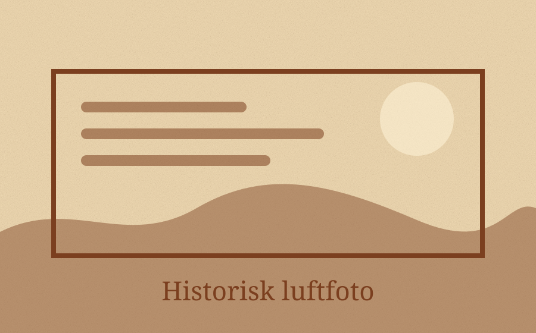

Danmark før Google
Se historien fra luften
Indtast en adresse, et område eller en bydel. Vælg cirka-årstal. Appen finder luftfotos, vurderer afstand og årstal, og viser de bedste match først.
ARKIV

Live søgning + sikker demo-fallback
Søg efter luftfotos
Prøv fx “Vesterbro København”, “Moselundsvej Helsingør” eller “Aarhus Havn”.
Klar. Vælg demo eller lav en søgning.
Resultater
Ingen resultater endnu.